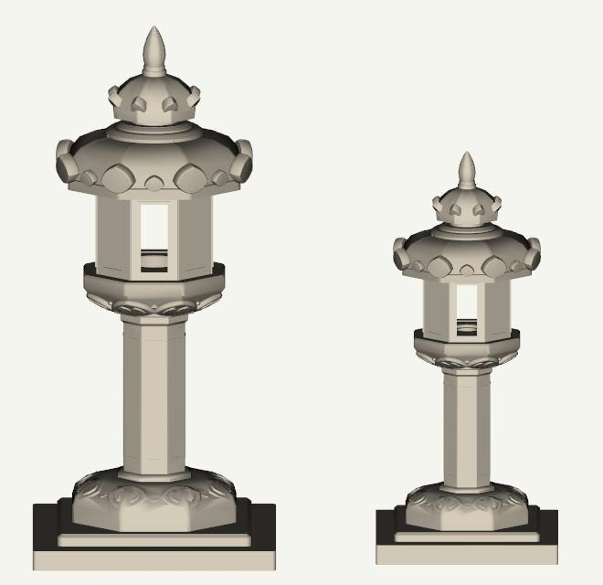
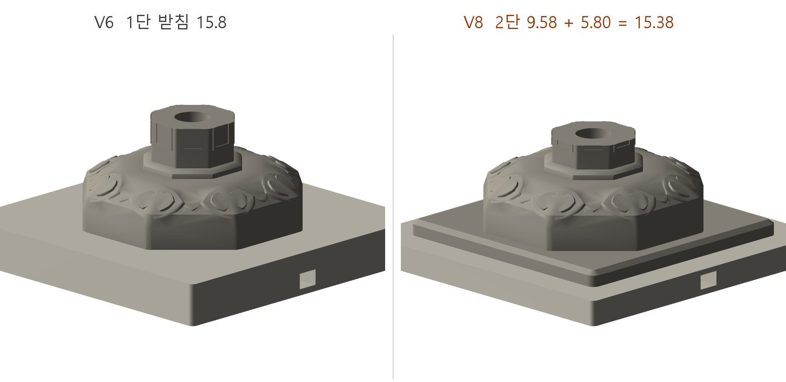

01 — FORM
형태를 읽다
지붕돌, 불을 넣는 화사석, 기둥, 2단 받침. 원래 석등의 층과 비례를 살려 3D 모델로 다시 그렸습니다.

고려 시대 석등인 나주 서문 석등을 높이 25 cm 무드등으로 옮겼습니다. 불을 넣던 화사석 자리에 LED를 넣어, 석등이 원래 하던 일을 집 안에서 다시 하게 했습니다. 형태 해석부터 내부 구조, 시제품, 제품화까지 직접 했습니다.
지붕돌, 불을 넣는 화사석, 기둥, 2단 받침. 원래 석등의 층과 비례를 살려 3D 모델로 다시 그렸습니다.

화사석은 자석 8개로 붙어 손으로 떼고 LED를 바꿀 수 있습니다. 받침 안에는 전선 통로와 USB 소켓 자리를 두고, 바닥 커버로 케이블을 정리했습니다. 부품은 나사와 인서트로 조립합니다.

V1부터 V8까지 출력과 조립을 반복했습니다. 자석을 안으로 숨기고, 무게와 출력 시간을 줄이고, 받침을 원형에 가깝게 2단으로 바꿨습니다.


세 가지 돌 색으로 정리하고 디자인 출원을 마쳤습니다. 보늘 스마트스토어에서 판매를 준비하고 있습니다.

Contact:
제품 설계와 시제품 제작을 맡습니다. 아이디어 단계여도 괜찮습니다.
문의 메일 쓰기